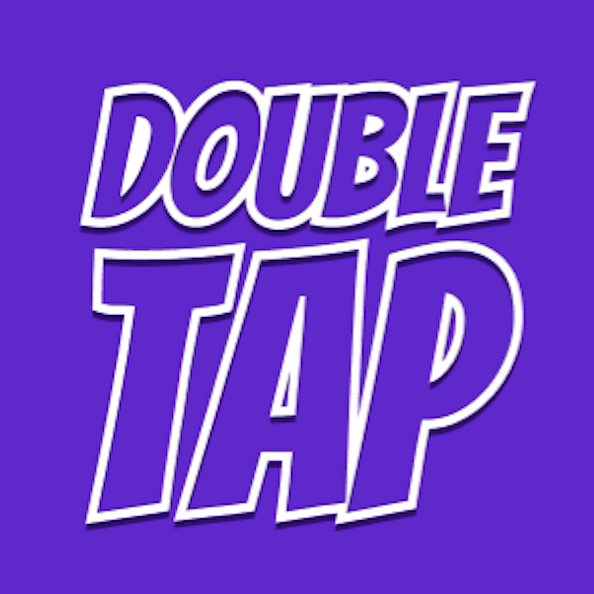
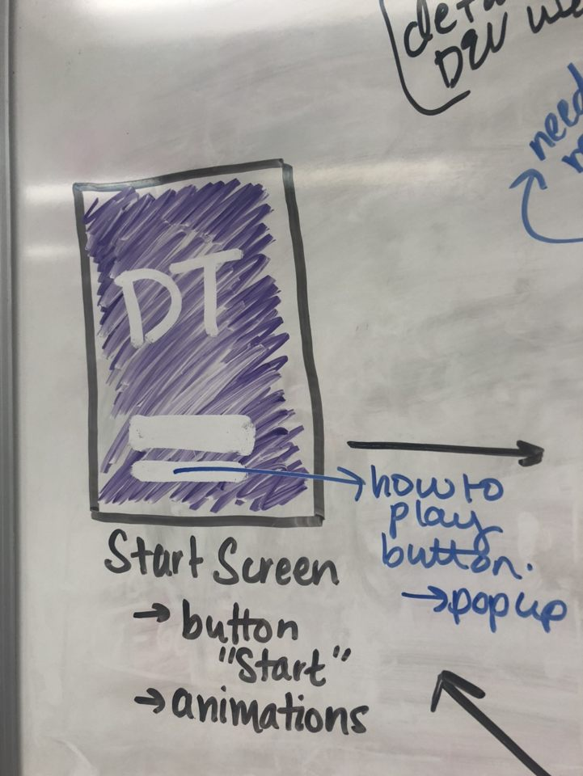
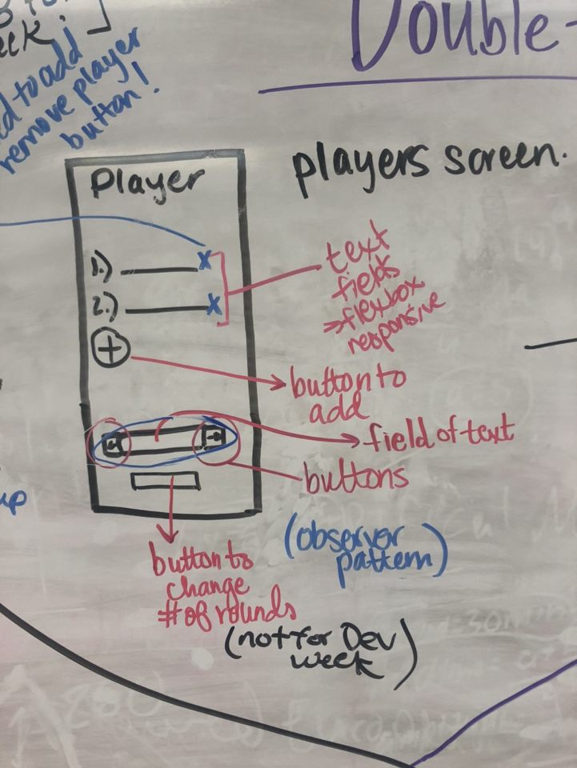
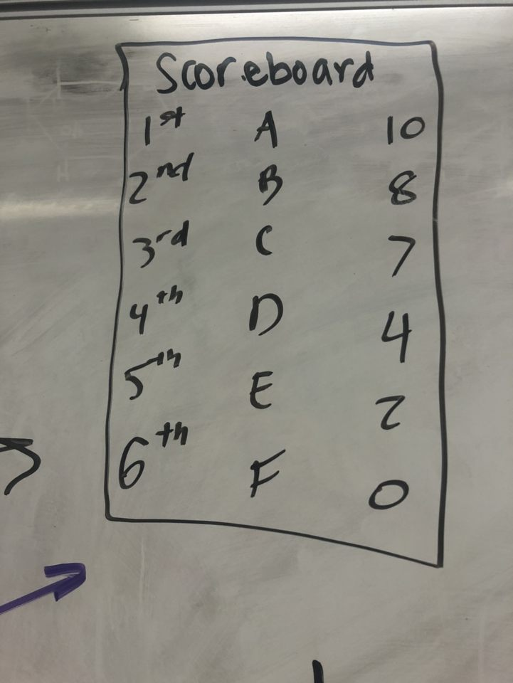
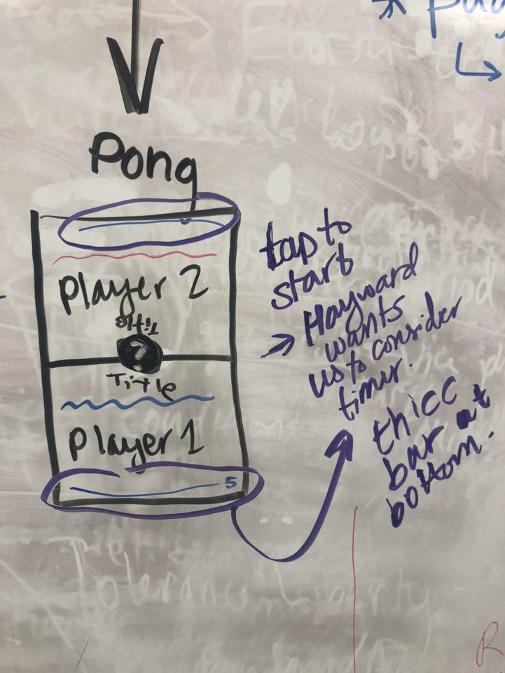
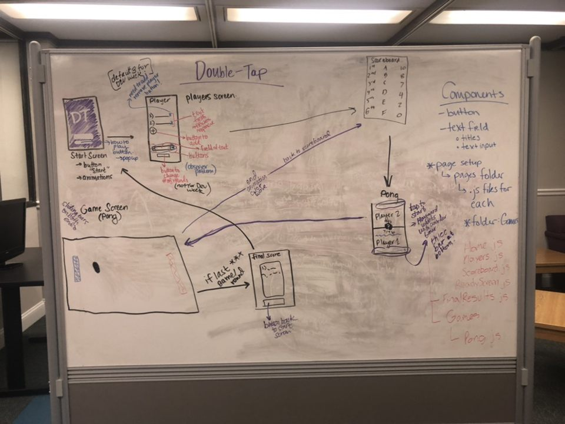
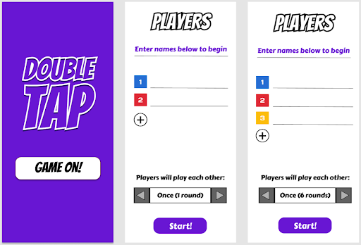
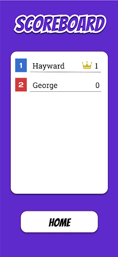
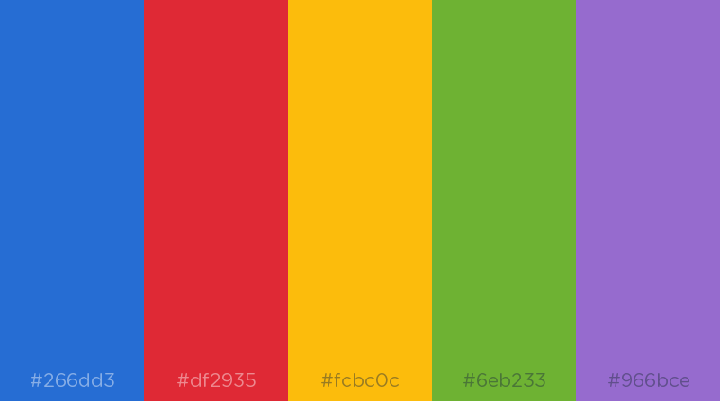
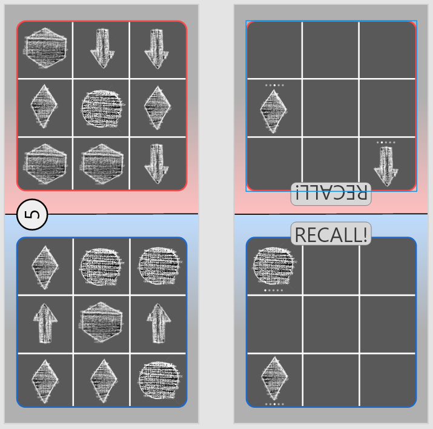

DoubleTap
Mobile game created with a team for Software Development for Wireless & Mobile Devices using React Native; consists of a series of touch-based minigames.
Project Intro
Double Tap is a competitive, multiplayer minigames mobile application played on a single device. The game requires a minimum of two players and can be played with up to six players. This mobile application is a collection of quick, simple, tapping mini games. This application was designed to create a competitive, yet fun environment with various minigames to keep all the players entertained. The game is a multiplayer game that is played round-robin style with upto six players. Double Tap was designed to create a fun, shareable experience for all of its users and also make potentially make otherwise boring experiences such as waiting in long lines more social and fun.
Low-Fidelity Mockups
The low-fidelity mockups were done to help create a better understanding of how to frame this application. It helped us understand how to better arrange our components and think more critically about the technical details of the application. We created a flowchart of the application to map out how everything should connect. Through this process, we learned the importance of low-fidelity mockups since this flowchart of screens helped us better understand how to put the application together overall to create smooth transitions and a better experience for our users. It helped us consider what patterns we could user and how to place our components on all of our screens to make them easily accessible, without detracting from the main point of each screen.
    High-Fidelity Mockups
The high-fidelity mockups were created using the mockup software called Figma. Figma is a collaborative tool, so we were all able to add our input to the design as we worked on them. This is the end goal that we planned for our project. The mockup of the game was reconsidered and then rendered to look more like the original theme, without the gradient and chalkboard, in the final product. Our high-fidelity mockups helped us create a goal for our final product.
 Design Considerations
This project was created to be a simple mobile game that could be accessible for people of all ages. To reflect this, we wanted to create a simple, yet lively, interface that users could easily navigate and pick-up on as they played different games. We tried to reflect the fun idea of the game through the use of color and simple text blocks.
When the app is first opened, the user sees a purple screen with only two things - the title and a start button. The screen is a purple that seems bright, but is also easy on the eyes. And, the title, Double Tap, is the main piece of text that dominates the screen and is in white. Then, below that is a button. Both the title and the button are white in order to contrast the purple and make sure it is easily seen by anyone on that page. These are also the only two things on the screen so that users can get to the players list and begin the games right away instead of being distracted by unnecessary things. It is meant to increase the conciseness and ease of usage of the application.
The application colors are simple, yet bright. Once the users are on the players list, they are able to add up to six players and each player is able to assign themselves a color that is then later reflected as the background of their section of the split screen before a game begins - each player gets a unique color based on our color pallette. The color choice is meant to reflect a fun, yet clean interface that is fun and inviting to users. We made an effort to pick colors that are not only bright and fun, but also toned down enough to not be too hard on the eyes, especially in darker room settings.
The biggest feature of this application is the split-screen feature. The split-screen is the decision we thought would be best to fulfill the purpose of creating a multiplayer application. Each screen’s orientation is facing the user it is meant for. The game they will play and the instructions they’ll see and all things needed for the game will fit into that portion of their screen. We also have a help button that is present on both ends and it pulls up the instruction; the orientation of the instructions depends on which user tapped on them. Each side of the screen first shows the color that is assigned to the people who’s turn it is.
Additionally, we also tried to account for accidental touches during the ready up portion by implementing a timer so that both players are on the same page about the game starting. The timer is a simple bar that is in the center and each player can clearly see it counting down until the beginning of the game mitigating any issues from accidental touches or even cheating by a player. We have a scoreboard that appears after each round to indicate the scores after each round and then after. Additionally, there is a round-robin implementation so that this game can be played with six players. This style of gaming allows us to fulfill our goal of creating a social game that several users can play together.
We wanted this game to be accessible, so we made everything one tap, and made sure to keep our games one touch as well. One of the biggest advantages of this application is it’s simplicity. The simple nature, yet detailed logic behind the game creates a really good and fun experience for all the users.
Iterative Design and Testing
Due to the nature of our application being an interactive multiplayer game, testing occurred mainly via user experience throughout the various stages of development. Testing the application in its early development stages occurred in Xcode via simulations, both on Android and iOS devices. By creating an early visual of each screen of Double Tap, our team could check various aspects of the application such as the screen layouts and styles, as well as the algorithms and logic encoded. The quick use of a simulator proved to be efficient in making changes to the code and seeing said changes right away. Additionally, using both an Android and iOS emulator allowed for our team to compare side-by-side the differences/similarities between the two in how the application presented on each respective screen. We continued to use this method of testing throughout the entirety of development for these said benefits.
Once we had established base functionality for the project, we took the application to testing among ourselves and our friends. In testing the application among the project members, we were satisfied with the functionality, and found the games to be simple and fun. When we tested the application among friends, however, we found that the application was not as self-explanatory as we had hoped. Even though we had implemented the button that explained each game, some of the interface was not as user friendly as desired. Specifically, the countdowns and the score counting in some screens were not as easy to understand as desired. This lead to some considerations for alternate ways to display this information. Moving forward, we would create more numerical representations for scores in the tap games.
Final Considerations
In conclusion, our application is a fun, multiplayer game featuring a series of minigames that creates a competitive and social experience for our users. The application is created in React Native and is a local, offline experience. The application allows for round-robin style tournaments for upto six people and a minimum of two. The application is all on one device and implements a split-screen function. The application is a fun way to add to any social setting or make potentially boring situations such as waiting in long lines more fun.
With several considerations and inspirations, we successfully developed Double Tap. Although it is not ready for a release, our project still accomplishes the original goal we set for ourselves, which was to create a fun, interactive experience made up of split-screen, tapping minigames that user could compete with using a round-robin style tournament. With the use of React Native, and appealing to all of our strengths as individuals, we were able to complete our goals for Double Tap.